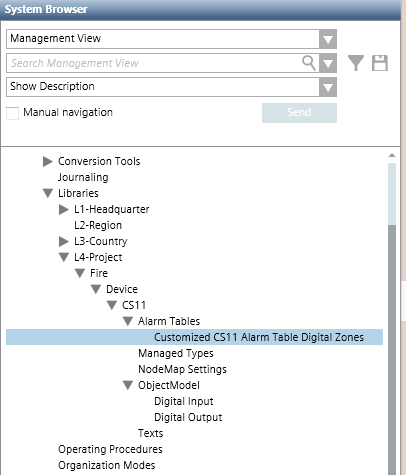
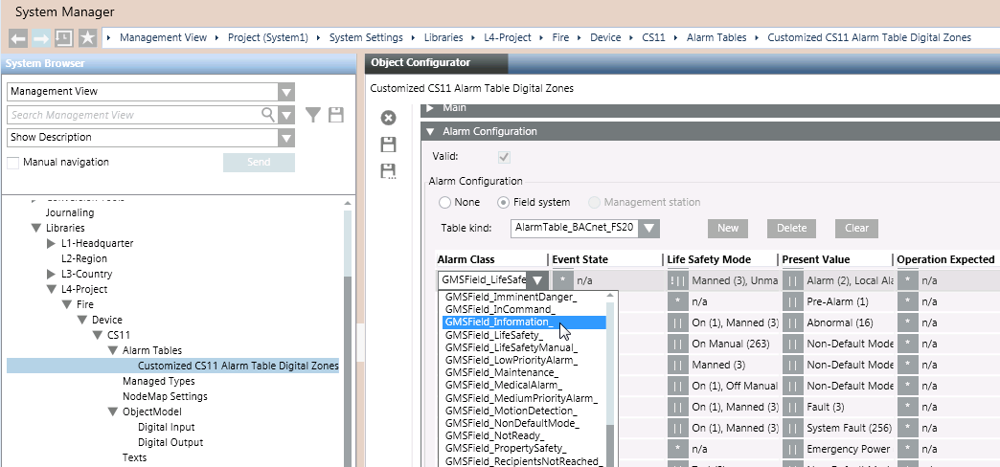

Configure a New Alarm Table in a Customized CS11 Device Library
Create a New Alarm Table
In a customized CS11 Device library, you can create multiple customized alarm tables.
- Select […] > Libraries > L1 Headquarter > Fire > Device > CS11 > Alarm Tables > [BACnet Fire Device].
- Click Save As
 .
. - In the Save Object As dialog box, as the destination location, select the Alarm Tables block of the customized CS11 Device library. For example L4-Project > Fire > Device > CS11 > Alarm Tables.
- Enter a name and description for the customized alarm table. For example, Customized CS11 Alarm Table Digital Zones.
- Click OK.
- A copy of the Headquarters CS11 alarm table is added under the Alarm Tables block of the customized library.

Configure the New Alarm Table
- Select the alarm table in the customized CS11 Device library.
For example, […] > Libraries > L4-Project > Fire > Device > CS11 > Alarm Tables > [customized CS11 alarm table digital zones]. - In the Object Configurator tab, open the Alarm Configuration expander.
- The content of the alarm table displays.
- In the alarm table, use the Present Value column to help you select the row you want to modify.
- In the selected alarm table row, you can, for example, change the Alarm Class from
GMSField_LifeSafetytoGMSField_Information. - Click Save
 .
. - The customized alarm table is available. You can now apply it either to a single CS11 point, or to a customized CS11 object model.
See Apply a CS11 Customized Alarm Table.
